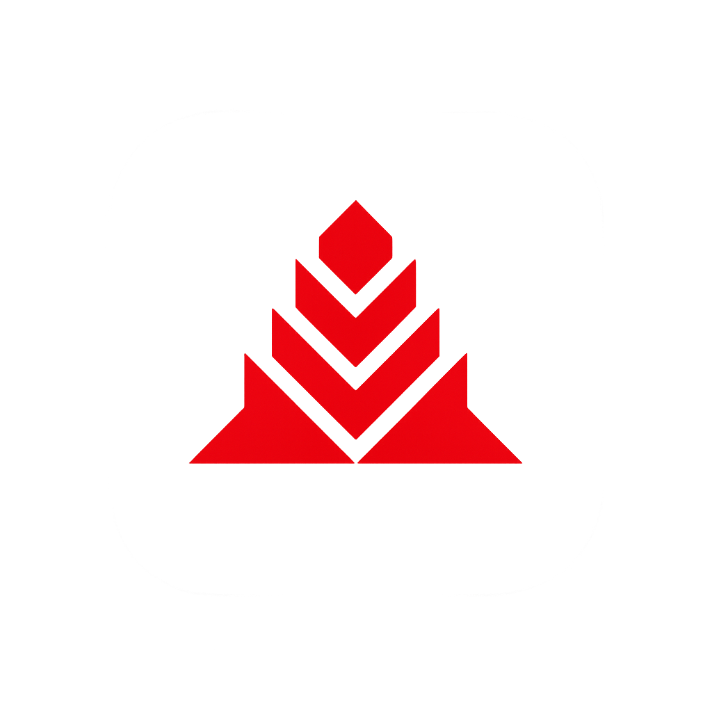

Este sistema antigo foi desativado. Migramos para uma plataforma mais moderna e integrada para melhor atender a operação.
Para liberar seu acesso ao novo sistema, entre em contato diretamente com o desenvolvedor Douglas Brito.